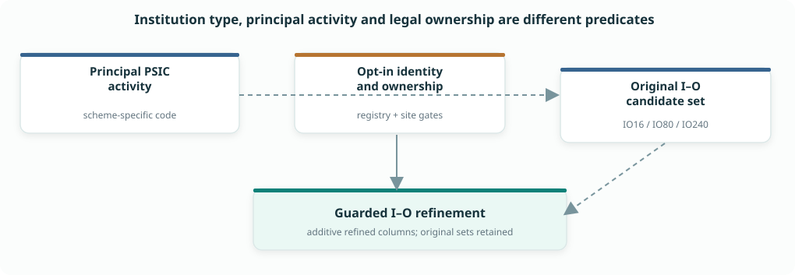

Institutions, activity and ownership
“What does this establishment do?” and “Who owns this institution?” are separate questions. The first is a PSIC activity problem; the second requires independent, attributable evidence and only affects narrowly eligible economic-industry candidate sets.
Why separate the questions?
A government education office does not deliver teaching in the same sense as a school; a public hospital and a private hospital can both carry the same PSIC health-service activity while falling into different public/private I–O industries. An institutional name, accreditation, participation list or source category alone does not establish legal ownership.

Operational administrative function
The Rev. 5 PSIC policy can recognize narrow administrative names such as a DepEd Schools Division Office and assign 84120, provided incompatible reviewed activity evidence does not veto it. It does not infer public/private school ownership. Generic “Department of Health” or a frontline hospital/school must not be force-reassigned merely because a government department is mentioned.
Specialized advisory evidence
The separate 178-rule specialized catalog handles activity patterns, institution types, source-specific signals, and review candidates. It emits audit fields such as specialized_status, specialized_candidate_codes, administrative_candidate_code, ownership_candidate, registry evidence fields and specialized_audit. These advisory candidates do not silently overwrite accepted PSIC, PCPC or PSCC decisions. A source label suggesting “public” is not equal to registry verification.
Explicit local registry references
Institutional enrichment is enabled by default. The four bundled national datasets are CHED HEIDA (2,424 eligible records), a single PhilHealth Level 1–3 hospital registry (1,338), UniFAST (1,955), and DepEd (30,364). All 36,081 reference records load locally without a separate download or configuration. Ambiguous HEIDA records are excluded. Set PLACETYPE_PH_INSTITUTION_REFERENCES only to override with a validated local JSON configuration or use the literal off to disable the stage. Invalid configurations and corrupted bundled data fail closed. See docs/INSTITUTION_REGISTRY_TOOLS.md.
{
"schema": "placetype-ph-institution-reference-config-v1",
"references": {
"verified_links": "C:\\data\\reviewed_institution_links.json"
}
}
This is only a configuration illustration: it does not assert that any particular record has been verified. Source/licensing checks and separate review of institution records are operator responsibilities.
Evidence ladder and identity safeguards
| Evidence | Identity/ownership interpretation |
|---|---|
| Independently reviewed canonical-to-registry link | Strong identity with auditable source and verification date; still subject to conflicts and activity compatibility. |
| True official facility ID plus canonical name and locality | Can support a strong exact site match under the resolver's constraints. |
| Official directory row with name/city similarity | Provisional, not a verified physical site. |
| BEIS school-ID prefix, UniFAST capture row, publication-row identifier | Hints/reference evidence; do not automatically prove branch identity or legal ownership. |
| OSM/Overture owner/operator claim | Explicit source claim, not independently verified ownership. |
| Religious prefix / “National” in name | Never sufficient alone to establish legal ownership. |
Wrong-site branches, incompatible PSIC domains, duplicate identities, or contradictory evidence force review or abstention. The packaged registry is available offline; no network download is required for default institutional enrichment.
Exact gated I–O candidate refinement
When strong institutional identity actually resolves ownership, ownership_io.py can append separate refined candidate columns for eligible education (PSIC division 85) or human health (division 86). The original I–O candidate sets are never overwritten.
| Activity division | Public IO80 / IO240 | Private IO80 / IO240 |
|---|---|---|
| PSIC 85 education | 74 / 229 | 75 / 230 |
| PSIC 86 human health | 76 / 231 | 77 / 232 |
The gate additionally requires a SINGLE PSIC result, eligible mapped division/group status, valid bridge basis, exact two-element public/private ambiguity, complete official reference provenance, and checked bundled numeric/name correspondence. Otherwise the refinement abstains. These are not default assignments for every school or clinic.
Implementation: institutional_pipeline.py · ownership_io.py · institutional data guide.